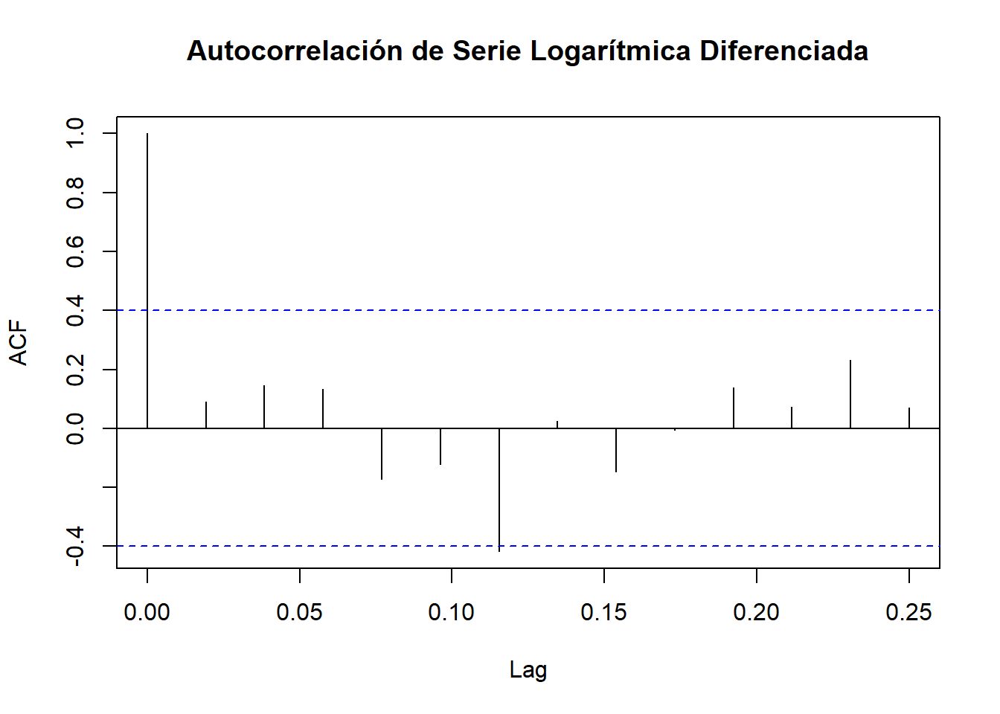
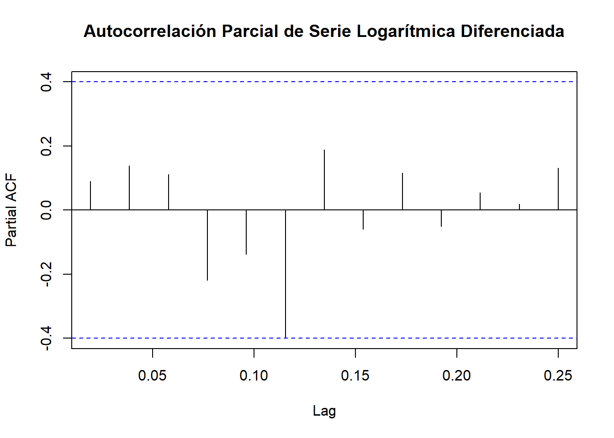
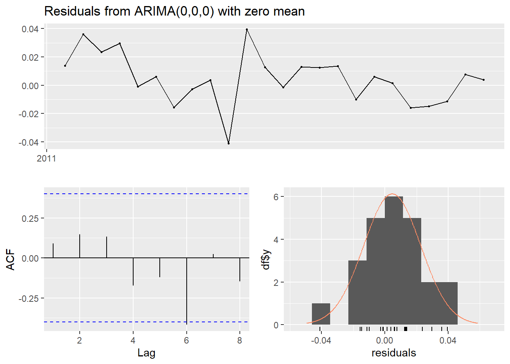
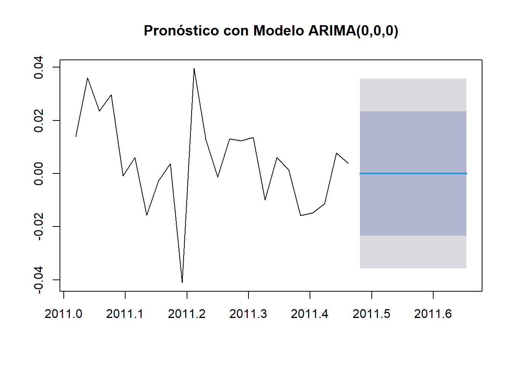

6 Modelo ARIMA
6.1 Identificación del modelo ARIMA
El proceso de identificación generalmente comienza con el análisis de autocorrelación (ACF) y autocorrelación parcial (PACF). Esto ayuda a decidir qué valores de p y q son apropiados para el modelo.
# Instalar los paquetes necesarios si aún no están instalados
if(!require(forecast)) install.packages("forecast")## Loading required package: forecast## Warning: package 'forecast' was built under R version 4.3.3## This is forecast 8.22.0
## Stackoverflow is a great place to get help on R issues:
## http://stackoverflow.com/tags/forecasting+r.if(!require(tseries)) install.packages("tseries")
# Cargar los paquetes
library(forecast)
library(tseries)# Análisis de autocorrelación para la serie diferenciada
acf(ts_data_log_diff, main = "Autocorrelación de Serie Logarítmica Diferenciada")
# Análisis de autocorrelación parcial para la serie diferenciada
pacf(ts_data_log_diff, main = "Autocorrelación Parcial de Serie Logarítmica Diferenciada")
6.2 Ajuste del modelo ARIMA
# Instalar y cargar el paquete forecast si no está instalado
if(!require(forecast)) install.packages("forecast")
# Cargar la serie temporal con transformación logarítmica y diferenciación
# (ten en cuenta que ts_data_log_diff es la serie logarítmica diferenciada)
ts_data_log <- log(ts_data) # Serie temporal transformada
ts_data_log_diff <- diff(ts_data_log) # Serie diferenciada
# Utilizar auto.arima para encontrar el mejor modelo ARIMA
arima_model <- auto.arima(ts_data_log_diff, trace = TRUE)##
## Fitting models using approximations to speed things up...
##
## ARIMA(2,0,2) with non-zero mean : Inf
## ARIMA(0,0,0) with non-zero mean : -121.1424
## ARIMA(1,0,0) with non-zero mean : -117.9833
## ARIMA(0,0,1) with non-zero mean : -118.6675
## ARIMA(0,0,0) with zero mean : -121.9732
## ARIMA(1,0,1) with non-zero mean : Inf
##
## Now re-fitting the best model(s) without approximations...
##
## ARIMA(0,0,0) with zero mean : -121.9732
##
## Best model: ARIMA(0,0,0) with zero mean## Series: ts_data_log_diff
## ARIMA(0,0,0) with zero mean
##
## sigma^2 = 0.0003318: log likelihood = 62.08
## AIC=-122.15 AICc=-121.97 BIC=-120.98El mejor modelo ARIMA identificado por auto.arima() para tu serie temporal es un ARIMA(0,0,0) con media cero. Este tipo de modelo se conoce como un “modelo de ruido blanco”.
Media cero significa que la serie temporal no muestra ninguna dependencia temporal significativa. Este tipo de serie tiene varianza constante y ningún componente de tendencia o estacionalidad detectable.
6.3 Diagnóstico del modelo ARIMA
Si el modelo ARIMA que obtuviste es ARIMA(0,0,0) con media cero, esto generalmente sugiere que no hay estructura significativa para modelar, lo que significa que la serie temporal se comporta como ruido blanco. En este caso, el diagnóstico y el pronóstico podrían no proporcionar mucha información adicional porque no hay patrones significativos en la serie temporal.
Sin embargo, para completar el proceso de análisis del modelo ARIMA y confirmar que el modelo es adecuado, realizamos el diagnóstico y el pronóstico. Esto te ayudará a verificar si los residuos del modelo son efectivamente ruido blanco y permitirá observar el resultado del pronóstico.
El diagnóstico del modelo implica revisar los residuos para asegurarse de que no haya patrones significativos y que se asemejen a ruido blanco.

##
## Ljung-Box test
##
## data: Residuals from ARIMA(0,0,0) with zero mean
## Q* = 2.7538, df = 5, p-value = 0.7379
##
## Model df: 0. Total lags used: 5El resultado del test de Ljung-Box sugiere que los residuos del modelo ARIMA(0,0,0) con media cero son consistentes con ruido blanco. El p-valor de 0.7379 es alto, indicando que no hay evidencia de autocorrelación significativa en los residuos. Esto es una señal de que el modelo ARIMA ajustado es adecuado y no deja patrones residuales sin modelar.
El resultado del test de Ljung-Box, junto con el modelo ARIMA(0,0,0) con media cero, sugiere que no hay patrones significativos o estructura predecible en la serie temporal. Esto indica que la serie temporal actúa como ruido blanco, con variabilidad aleatoria y sin tendencias claras.
6.4 Pronostico del Modelo ARIMA
A pesar de que el modelo no muestra patrones predecibles, todavía puedes realizar un pronóstico para comprender cómo se comportará la serie en el futuro. El pronóstico de un modelo ARIMA(0,0,0) con media cero generalmente muestra valores cercanos a cero o variabilidad aleatoria.
# Hacer pronóstico para los próximos períodos
forecast_result <- forecast(arima_model, h = 10) # Pronóstico para 10 períodos futuros
# Visualizar el pronóstico
plot(forecast_result, main = "Pronóstico con Modelo ARIMA(0,0,0)")